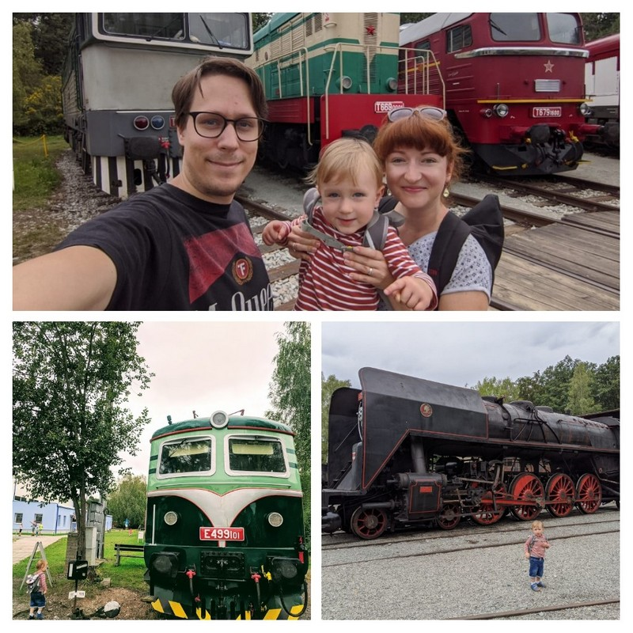
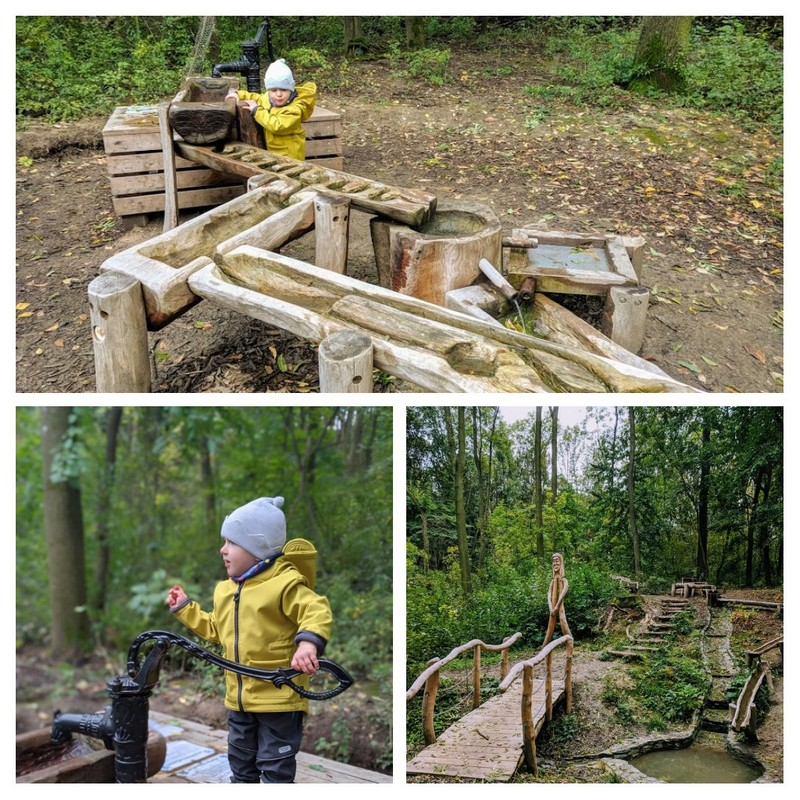
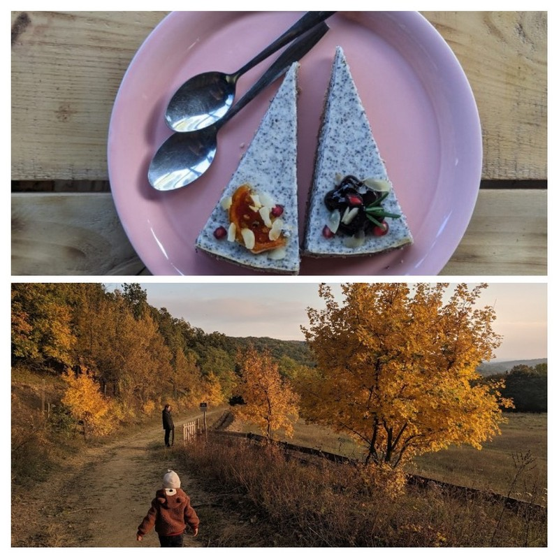
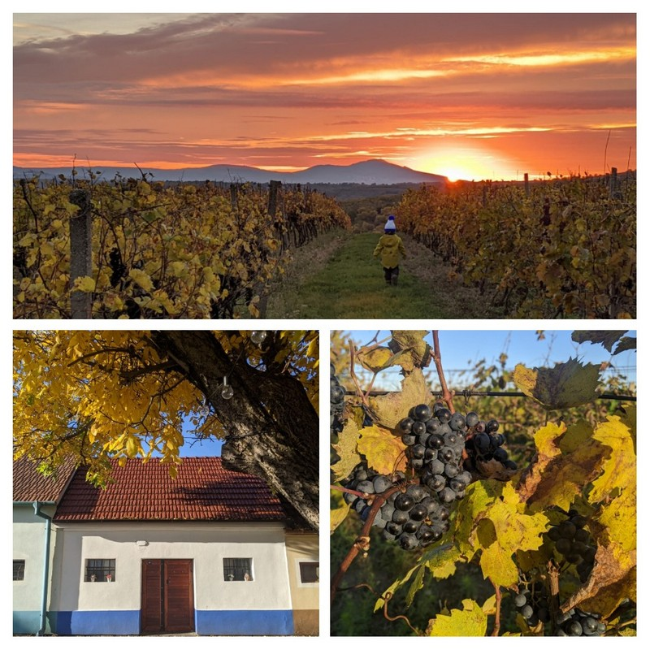
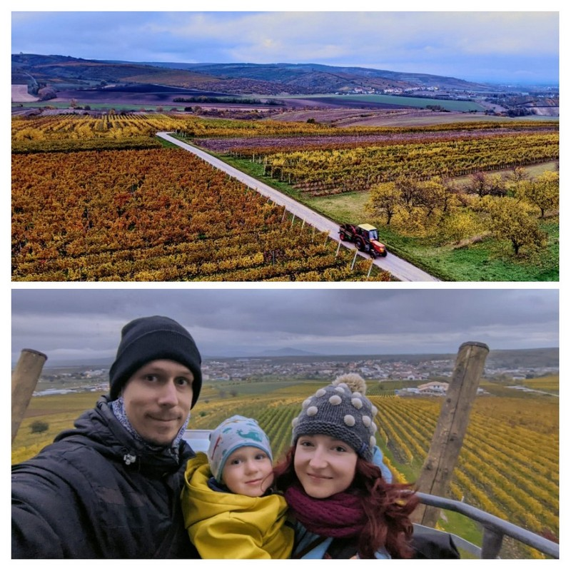
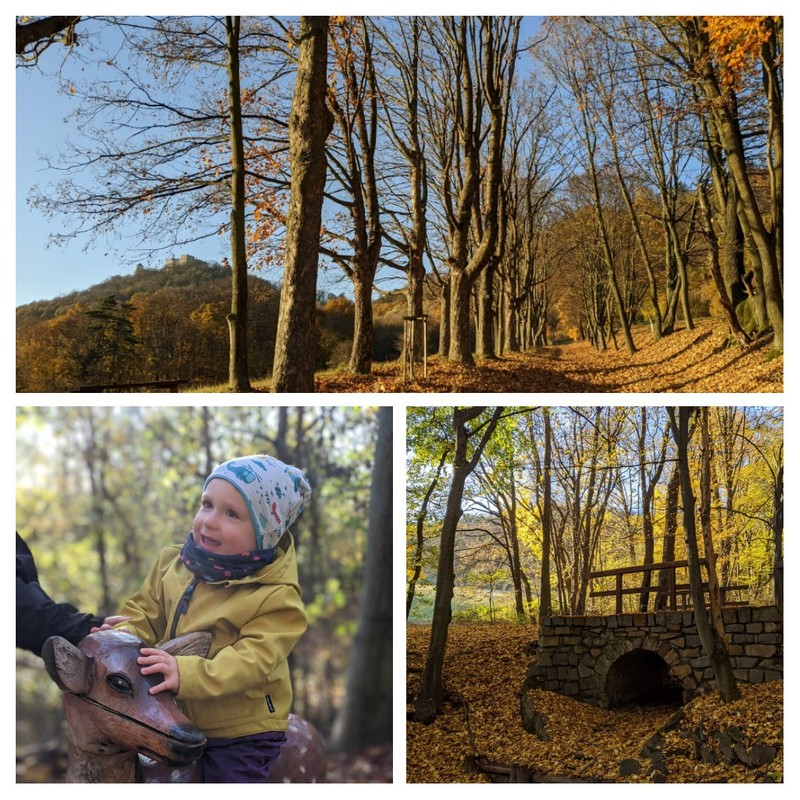
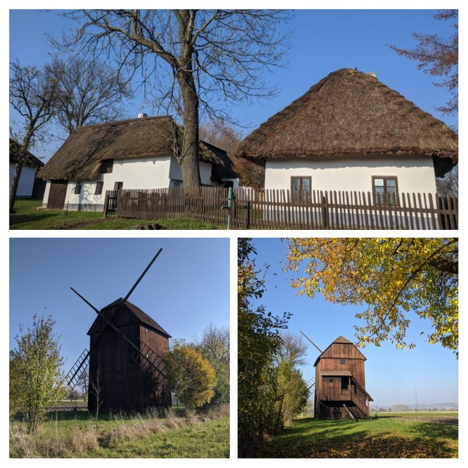
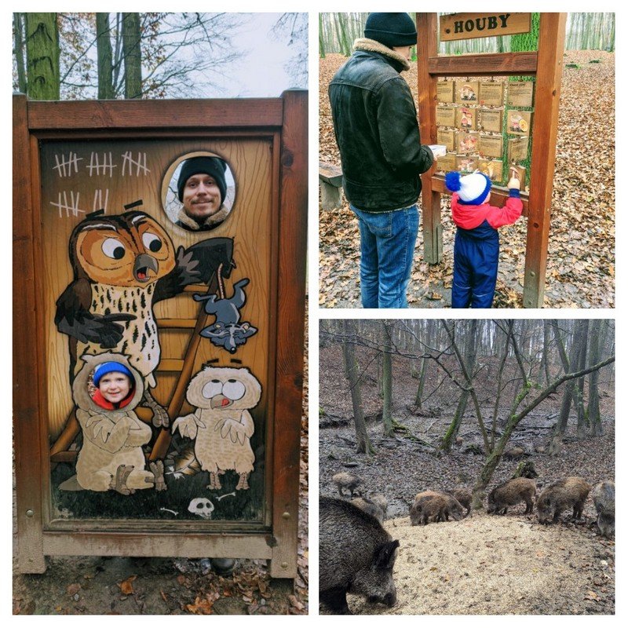
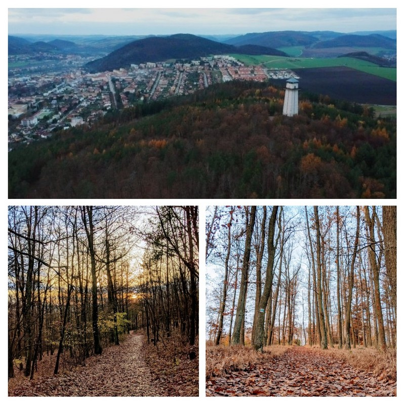
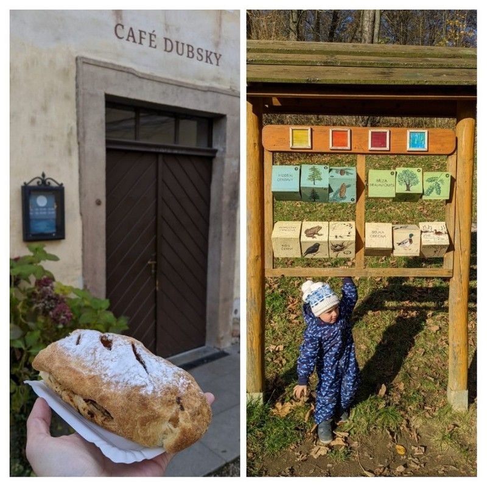

Moje předsevzetí pokračovat v nastolené tradici víkendových rodinných výletů i na podzim jsme myslím naplnili beze zbytku. Překrásné babí léto nám přálo a většina míst nás okouzlila natolik, že se určitě budeme vracet i opakovaně…
Muzeum Českých drah, Lužná u Rakovníka
Jestli je vaše dítě také milovníkem vláčků jako náš Oli, tak tohle je místo, kde se bude cítit opravdu v sedmém nebi :-) Návštěvu jsme stihli na samém začátku září, ještě než koronavirus opět naplno propuknul, a jsem za to ráda, protože tenhle zážitek jsem Olimu slibovala tak dlouho! Přehlídka krásně opravených historických mašin s možností jízdy, depo s točnou, muzeum s modely vláčků a dalšími nádražáckými rekvizitami (tam jsme se ukryli před malou přeháňkou), hřiště v mašinkovém stylu a jeden báječný den, na který všichni dodnes vzpomínáme :-)

Studánka u víly Vrbičky, Moravany
Tato nová studánka se nachází nedaleko naučné stezky Pohádkový potok, na kterou se určitě někdy v budoucnu vydáme - při naší návštěvě ale byl les zrovna dost rozbahněný, a tak jsme zůstali pouze u studánky. I ta ale nabízí pro děti dostatek zábavy a podnětů - pomocí pumpy můžete nahnat vodu do dřevěných korýtek a pozorovat průtok a vodopády… My si tu vydrželi hrát určitě minimálně půl hodiny a nebýt nevlídného počasí, vydrželi bychom mnohem déle :-)

Farma Ovčí terasy, Němčičky
První z naší podzimní série výletů “na jih”, mezi vinice :-) Malebná farma na překrásném místě, hned u parkoviště hřiště s trampolínou, pro děti lákavé zpestření procházky v podobě zvířátek (mají tu ovečky, prasátka, králíčky, kozy…) a v době covidové mimořádně cenná atrakce - samoobslužná stodola, kde si můžete z lednice nabídnout domácí dortíky a další občerstvení a vhodit peníze do připravené kasičky. Tohle místo, vzdálené zhruba 40 km od Brna, nás tak okouzlilo, že se tam na jaře rozhodně zase vydáme!

Kraví hora, Bořetice
Mezi vinicemi se nám zalíbilo natolik, že jsme hned naplánovali další výlet! Bořetice jsou vyhlášená vinařská obec s nezaměnitelnou atmosférou barevných vinných sklípků a my jsme návštěvu spojili s příjemnou procházkou na rozhlednu Kraví hora, odkud jsme si užili dechberoucí výhled na panorama Pálavy v paprscích zapadajícího slunce. Krabice vína z vinařství Jedlička, kterou jsme si odsud odvezli, už byla jen příjemným bonusem a završením našeho výletu :-)

Rozhledna Slunečná, Velké Pavlovice
A do třetice za vínem :-) Tentokrát jsme se vydali do Velkých Pavlovic, odkud jsme šli nenáročnou, 4 km dlouhou procházkou vedoucí mezi vinicemi až na rozhlednu Slunečná. Bonusem pro vláčkuchtívé dítě bylo parkování přímo u železniční zastávky O:-)

Naučná stezka okolo Buchlova
Další malebný den pozdního babího léta nás vylákal na výlet na hrad Buchlov, konkrétně na lesnickou naučnou stezku, která vede v okolním lese. Součástí jejích zastavení jsou dřevěné sochy lesní zvěře, které jsou pro děti samozřejmě báječným zpestřením procházky.

Skanzen Rymice
Dalším minivýletem toho víkendu byla návštěva Rymic - byť to je od Kroměříže coby kamenem, nikdy jsem tam nebyla! Zaparkovali jsme v centru obce u krásného nového hřiště, kde se O. mohl vyřádit, a pak už jsme pokračovali kolem ohrady s ovečkami a zrekonstruovaných vesnických stavení až k větrnému mlýnu.

Obora Holedná
Holedná, kterou asi nemusím žádnému Brňákovi představovat, je taková naše podzimní klasika, kam se vydáváme každým rokem za zvířátky. Před dvěma lety v nosítku, před rokem ve sporťáku a letos už konečně pěšky :-)! Upršené počasí nám sice moc nepřálo, ale tím jsme se nenechali odradit. Prošli jsme si celou naučnou stezku s několika interaktivními zastaveními a samozřejmě jsme nevynechali ani prasátka :-) Jen srnky se nám tentokrát bohužel neukázaly.

Rozhledna Klucanina, Tišnov
Aneb výlet na rozhlednu, na kterou jsme nakonec nedorazili a krásně malovaná interaktivní naučná stezka, kterou jsme šli potmě :D… I to je holt riziko podzimního výletování, kdy už se stmívá proklatě brzy, ale aspoň máme o důvod víc se sem vrátit. Polítat s dronem jsme ale naštěstí stihli a ta panoramata teda stála za to!

Zámek Lysice
Výlet do Lysic pro nás byl opravdovým překvapením. Nejen že se tu nachází krásný zámek a zámecký park s kolonádou (ten byl bohužel v době naší návštěvy kvůli covidu zavřený), ale přímo na nádvoří turisty potěší otevřené okénko Café Dubský, kde prodávají výborné občerstvení za naprosto neuvěřitelné ceny! My jsme se tu odměnili až na konci našeho výletu, ale klidně to tu můžete i odstartovat :-) Dalším naším cílem byla dětská naučná stezka zámeckou oborou, v jejíž blízkosti najdete i prima hřiště. To Oliho ve výsledku zaujalo víc, takže jme stezku nedošli až do konce, ale i tak to bylo hezké zpestření procházky. Určitě se sem na jaře nebo v létě vydáme znovu.
